Úvodní info o hře
Witch It je počítačová hra vyvinutá německým vývojářem Barrel Roll Games a vydavatelstvím Daedalic Entertainment sídlícím v Hamburku. Hra byla původně vydána v roce 2017 v Předběžném přístupu a jako plná verze byla vydána pro Microsoft Windows 22. října 2020. Hra je založena na herním konceptu schovávané (Hide'n'Seek).Hra byla nejspíše napsána v C++ (ale to jsem nenašel, jen odhaduji z toho, že to je v Unreal Enginu).Hra se hraje v režimu Multiplayer (pro více hráčů), maximální počet hráčů na serveru je 16. Na výběr je z 58 oficiálních serverů v Americe (US), Evropě (EU), Asii (HK) (dohromady 174 + neoficiální servery). Ve hře je 93 achievmentů (úspěchů) , většina z nich jsou dosažení určitého levelu, ale jsou tam i nějaké zákeřnosti.
Ve hře jsou i úkoly (Questy), a to denní i týdenní. Za splnění těchto úkolů hráč dostane určitou
odměnu:
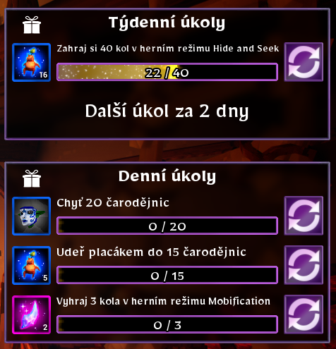
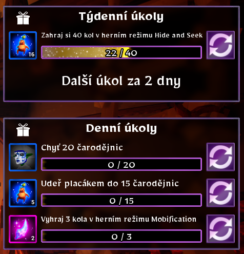
Vítejte ve Witch It!:
Jsou zde 2 role (+ Spectator, ale ten jen sleduje hru):
Hunter
Je lovec, který má za úkol najít a chytit všechny čarodějnice. Lovec může střílet brambory, které dávají 7 dmg a dýku, která normálně dává 7 dmg a 2x tolik (14 dmg), když je nabitá.Slepice

- Cooldown: 10s
Vysavač
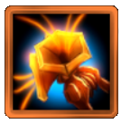- Cooldown: 8s
Hook
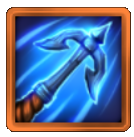- Cooldown: 5s
- Damage: 12
Body Slam (Placák)
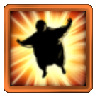- Cooldown: 2s
- Damage: 4 - 32
Česnek(Blokátor Kouzel)
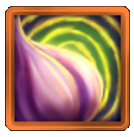- Cooldown: 8s
Koule
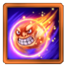- Cooldown: 5s
- Damage: 8 - 16
Witch
Je čarodějnice, která má většinou za úkol se schovat a přežít. Ve většině módů se může měnit na předměty (propy). Má rozmanitou sadu kouzel(spellů):Létání(Koště)
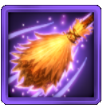- Aktivace: 2 many
- Mana za sekundu: 46m/s
Possess
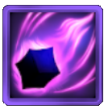- Cooldown: 1,5s
- Aktivace: až 80 many
Houbičky
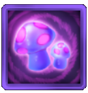- Cooldown: 3s
- Aktivace: 70 many
Luaq(Strašidlo)
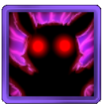- Cooldown: 1,5s
- Aktivace: 70 many
Magické oko (Duch)
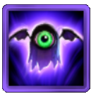- Aktivace: 20 many
Decoy(Návnada)
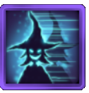- Aktivace: 20 many
- Mana za sekundu: 3m/s
Herní módy
Je zde 6 různých módů:-
Hide and Seek
Lovci musí chytit všechny čarodějnice, aby vyhráli kolo. Čarodějnice vyhrávají, když vyprší omezená doba
hledání. -
Mobification
Podobné jako Hide And Seek, ale s tím rozdílem, že když lovec chytí čarodějnici, tak neumře, ale stává
se z ní Hunter. -
Hunt a Hag
Speciální schopnosti jsou zakázány pro oba týmy a lovci mohou používat pouze svou zbraň na blízko (Melee
attack). Jinak režim funguje stejně jako Mobification. -
Imposturous (WIP)
-
Fill a Pot (WIP)
Týmy čarodějnic a lovců o stejném počtu(1v1, 2v2, atd) mezi sebou soutěží, aby naplnily nebo zabránily
třem z pěti magických kotlíků s dvěma určitými předměty. -
Creative
Je mód, kde si každý může postavit mapu dle sebe. Tomuto módu moc nerozumím, takže tady je tutoriál od někoho jiného, pokud se chcete podívat a chcete se ho naučit. Pokud si
chcete zahrát nějaké custom mapy, tak můžete zde.
Ukázka:
Ukázka:
Ukázka:
To vyžaduje vysokou úroveň aktivity od všech hráčů a je proto odměněno více zkušenostními body než v jiných herních režimech.
Ukázka:
Mapy
Snowbreeze
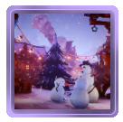
The Chummy Potato
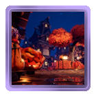
Grunewald Library
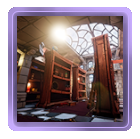
Grunewald at Night
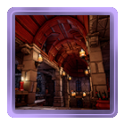
Morgenstund
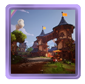Fiskersted

Loakiki Paradise
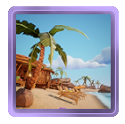Kula Kula Islands
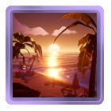Sleeping Rose Cemetry
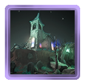
Twin Mask Theatre
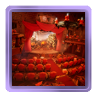
Shipwreck Hollow
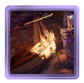
Port Plunder
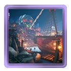
Cursed Ruins
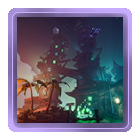Morgaryll Forest
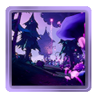Twisted House
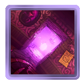Shard of Wiqqarra
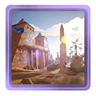Amara's Fountain
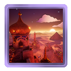Flint Falls
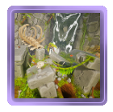obsah4